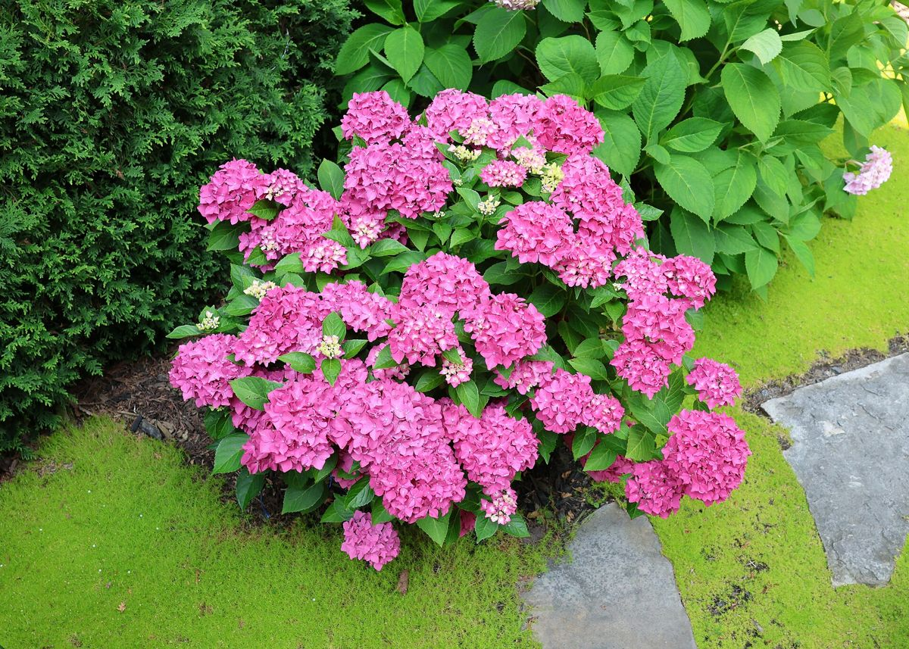
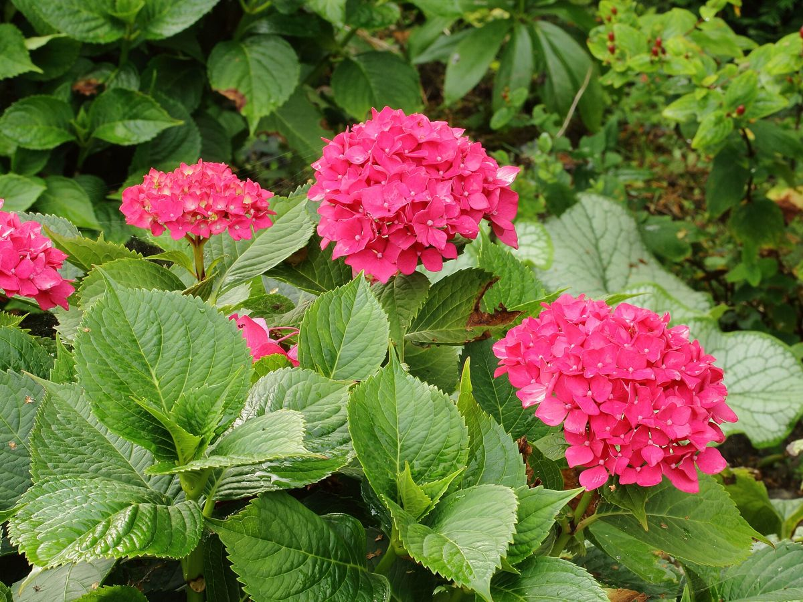
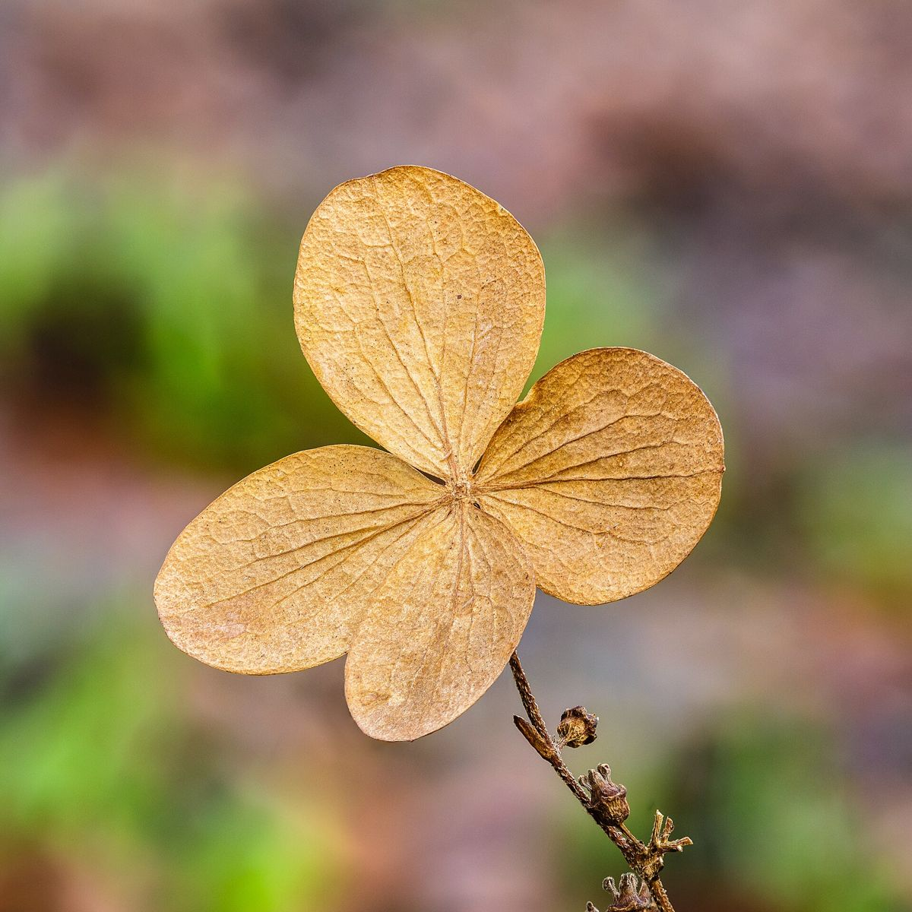
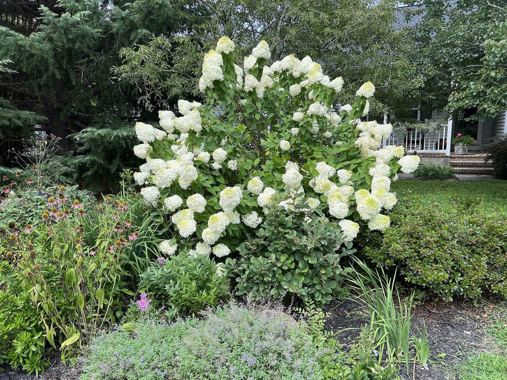
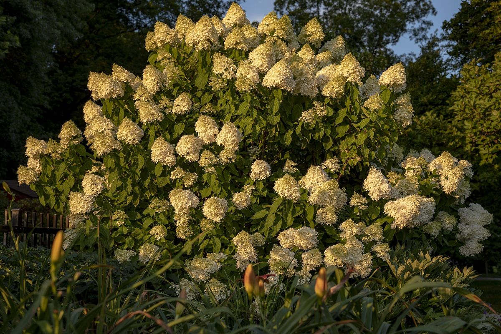

Hortenzie z Hranic
Barevná kolekce pro zahrady, terasy i nádoby. Konkrétní kultivary, velikosti rostlin a termíny prodeje se mění podle sezóny – aktuální dostupnost potvrdí provoz v Hranicích.

Vyberte podle prostoru a podmínek
Sortiment se mění v průběhu sezóny. Pro aktuální kultivary, velikosti a dostupnost kontaktujte provoz Hranice.
Zahradní výsadby
O vhodnosti kultivaru pro konkrétní stanoviště se poraďte při nákupu.
Nádoby a terasy
Pro nádoby vybírejte kompaktní rostliny a počítejte s pravidelnou zálivkou.
Barevná kolekce
Nabídka se mění v průběhu sezóny; barva květů může u některých hortenzií reagovat na půdní podmínky.
Hortenzie v barvách sezóny
Fotografie pocházejí z materiálů uložených přímo v repozitáři.






Dobrý start rozhoduje
- Konkrétní stanoviště volte podle druhu a kultivaru; často vyhovuje světlé místo chráněné před ostrým poledním sluncem.
- Substrát udržujte rovnoměrně vlhký, nikoli trvale přemokřený.
- Při pěstování v nádobě počítejte s odtokem vody a pravidelnou kontrolou vláhy.
- Řez a zimní ochranu přizpůsobte typu hortenzie; různé skupiny kvetou na odlišně starém dřevě.
Nejste-li si jistí kultivarem, vyžádejte si doporučení přímo u prodejce.
Zahradnický provoz Hranice
| Adresa | Trávnická 9, 753 01 Hranice I-Město |
|---|---|
| Telefon | +420 581 602 095 |
| sempra.hranice@seznam.cz | |
| Aktuální nabídka | Ověřte před návštěvou |
Hledáte konkrétní hortenzii?
Pošlete představu o barvě, velikosti a počtu rostlin. Provoz potvrdí dostupný sortiment.
Napsat do Hranic →